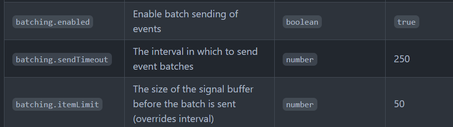

Grafana 提供了許多工具讓維運團隊能很清楚的知道系統的相關狀態，針對網頁相關效能的監控，也有提供相關的 solution，就是 Faro

Grafana Faro 的運作方式如下圖，

前端開發可以透過提供的 SDK 將相關資訊傳到後面的 Agent/Collect ，就完成了。只是 SDK 雖然簡單套用，裡面有很多細節設定是需要深入研究的，這篇就是這些設定的學習筆記
Faro Web SDK
@grafana/faro-web-sdk provides instrumentations, metas and transports for use in web applications，安裝使用方法如下
-
安裝
faro-web-sdk1
npm i @grafana/faro-web-sdk
-
initialize
1
2
3
4
5
6
7
8
9
10import { initializeFaro } from '@grafana/faro-web-sdk';
const faro = initializeFaro({
url: 'https://collector-host:12345/collect',
apiKey: 'secret',
app: {
name: 'frontend',
version: '1.0.0',
},
});url: Grafana Agent 的位置apiKey: 對應到 Grafana Agent 的integrations.app_agent_receiver_configs下的server.api_key設定app: Web Application 的 meta 資訊，會用於 Grafana Dashboard 上
-
當這樣設定完成後，開啟網頁時，在 network 的地方就會看到 SDK post 相關資訊到設定的 agent 位置
基本用法
當遇到需要手動推送資訊時，SDK 也有提供對應的 API 接口
-
手動推送 log
1
2
3
4
5
6
7
8
9
10
11
12
13
14// send a log message
// by default info, warn and error levels are captured.
// trace, debug and log are not
console.info('Hello world', 123);
// or
faro.api.pushLog(['Hello world', 123], { level: LogLevel.Debug });
// log with context
faro.api.pushLog(['Sending update'], {
context: {
payload: thePayload,
},
level: LogLevel.TRACE,
}); -
手動送 Exception
1
faro.api.pushError(new Error('everything went horribly wrong'));
-
手動送 Event
1
faro.api.pushEvent('navigation', { url: window.location.href });
-
手動送
meaurement1
2
3
4
5
6
7faro.api.pushMeasurement({
type: 'cart-transaction',
values: {
delay: 122,
duration: 4000,
},
}); -
pause/resume Faro
1
2
3
4
5// pause faro, preventing events from being sent
faro.pause();
// resume sending events
faro.unpause();
學習筆記
-
Faro SDK 預設會忽略短時間內相同訊息的事件，不會每一筆都往後面送，如果想要改變這行為，可以設定
dedupe: false(dedupe: A flag for toggling deduplication filter) -
預設是採 batch sending 的模式，每 250 ms 或是每 50 筆送一次，這些數值也可以設定

-
上一段提到的手動送資訊到後面的 API，都有額外的參數可以設定，細節可以參閱這邊
-
很多 SDK 的使用細節說明都寫在
faro-core的地方，README 有此去 -
預設有提供
faro-react，其他 framework 如果想要實作類似的效果，可以參考 react 的版本，包含的項目有- Error Boundary - Provides additional stacktrace for errors
- Component Profiler - Capture every re-render of a component, the un/mounting time etc.
- Router (v4-v6) integration - Send events for all route changes
- SSR support
以 Angular 來說，應該也可以做到 1~3 點，但我還沒有自己動手實作過，先暫定可以好了
小結
Faro 提供的是 RUM (Real User Monitoring) 的相關資訊，除了 Grafana，Kibana 和 Sentry 都有提供類似的功能，只是因為自家的 Monitor stack 是 Grafana 為主，所以選擇 Faro 只是為了讓使用的工程師不用在工具中切來切去
前端效能調教水很深，收集到的這些資訊並不會有 Web 在產生畫面的相關資訊，那些需要回到瀏覽器上做分析，背後的 web vita API 可以參考這一個套件 web-vitals